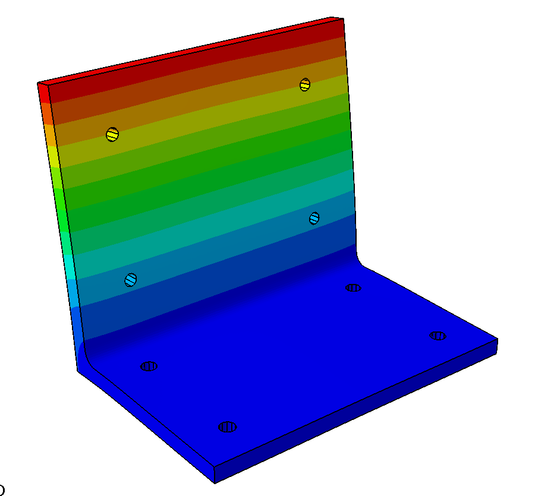
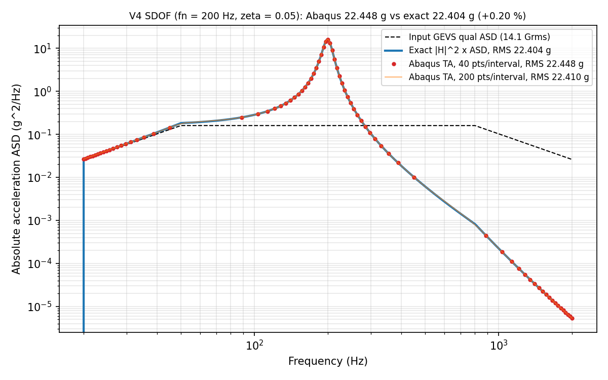
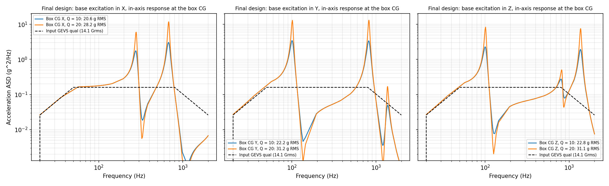
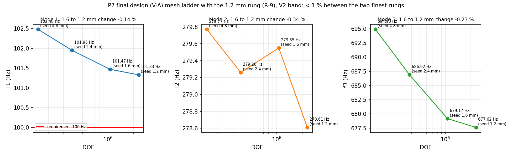
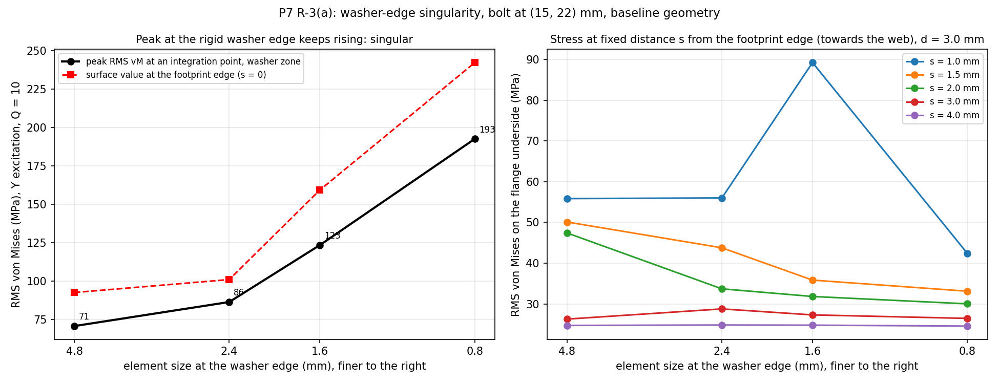
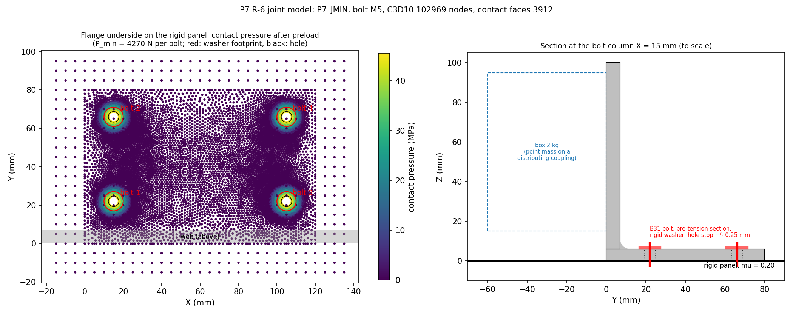

Payload Bracket: Random Vibration Qualification to NASA GEVS
- Solver
- Abaqus/Standard, frequency extraction and random response
- Validated against
- Exact SDOF integral, Miles’ equation and a hand frequency model
- Headline
- 104.4 Hzfirst mode, every margin positive at 14.1 Grms
- Material
- Al 6061-T6 bracket, A286 M6 bolts

Problem
Anything bolted inside a launch vehicle must survive the random vibration of launch. A 2 kg avionics box sits on an aluminium L-bracket that is bolted to a panel, and it is qualified to the NASA GEVS component spectrum: 20 to 2000 Hz, 14.1 Grms, two minutes in each axis. The bracket has to do two things at once. It must be stiff enough that its first mode stays above 100 Hz, clear of the vehicle’s own low modes. And under the 3-sigma loads the spectrum produces, the bracket and its bolted base joint must keep positive margins against yield, ultimate, separation and slip, with fatigue life to spare.
Method
The bracket is built by a Python script and meshed in quadratic tetrahedra. The box is a 2 kg point mass with its rotary inertia, tied to its four mounting holes by a distributing coupling. Frequency extraction feeds a random-response analysis with base excitation in X, Y and Z separately, at two damping levels (Q = 10 as the baseline, Q = 20 as the sensitivity), since damping is the largest single uncertainty. Margins use the NASA-STD-5001 factors on 3-sigma stress, and fatigue uses Steinberg’s three-band method with Miner’s rule. The bolted base joint is checked as a joint to NASA-STD-5020, with a nonlinear contact model: preloaded bolts at both ends of the preload scatter, flange-to-panel contact with friction, and finite washers.
Validation
Every check had its pass band written down before the run it graded. The key one tests the solver itself. A single spring-mass system under the same GEVS spectrum gives 22.448 g RMS in Abaqus against 22.404 g from exact numerical integration, a 0.20 percent difference, so the random-response pipeline is trustworthy before it touches the bracket. The mesh converges: the first three frequencies move by 0.14, 0.34 and 0.23 percent between the two finest meshes, against a 1 percent band. Two declared checks failed and stay in the record as failures. A textbook cantilever formula overpredicted the first mode by 50.6 percent, because it treats the web root as rigid. A second hand model, derived to include the flange flexing at the root, landed within 5.5 percent, which shows the mechanism is understood. And the box response comes out 34 to 51 percent below Miles’ single-mode estimate on the dominant mode, because two modes share the box mass in every axis.
The design iteration
The 6 mm baseline bracket failed the frequency requirement at 91.08 Hz. A 7 mm web (30 g more) lifted the first mode to 101.5 Hz. A hand prying check of the bolted joint then showed negative margins, and a full nonlinear contact model confirmed two of them for the original M5 bolts: bolt yield and slip. Moving to M6 bolts, the smallest change in the declared order of fixes, closed both. The same contact model also showed that the hand check had been far too harsh on separation and slip, and unconservative at the low end of the preload scatter, which is why a joint needs its own model rather than a better lever-arm guess.
Headline results
| Quantity | Value |
|---|---|
| First mode (requirement 100 Hz) | 104.4 Hz |
| First mode on the converged mesh (M5 geometry, a lower bound) | 101.3 Hz |
| Box RMS acceleration, X / Y / Z, Q = 10 | 21.0 / 22.6 / 22.1 g |
| Bracket stress margin, yield / ultimate | +0.59 / +0.71 |
| Bolt tension margin, yield / ultimate | +0.024 / +0.43 |
| Joint separation margin (NASA-STD-5020) | > +0.14 |
| Joint slip margin | +0.075 |
| Bolt shear / flange bearing margin | +2.42 / +1.41 |
| Fatigue damage, 3 axes, 4× life factor, Q = 10 | 9.3 × 10−6 |
| Bracket mass (baseline 0.337 kg) | 0.367 kg |
The thin number is bolt yield, at +0.024. It is set almost entirely by the ±35 percent scatter of torque-controlled preload, not by the vibration load, so the cheapest way to widen it is an installation callout (controlled lubrication or a lower torque), not more metal.
In motion
Figures





Limitations
- The panel is modelled as rigid and the box as a rigid point mass. A real panel and fixture are softer, so the real first mode may be a few percent lower.
- Damping is assumed, not measured. Responses scale roughly with the square root of Q, which is why both Q = 10 and Q = 20 are reported.
- The slip margin holds for bare metal faying surfaces (friction 0.20). With anodised or chem-filmed surfaces (0.10) it would be negative, and the joint would qualify as a bearing joint instead, which is declared as a design choice rather than claimed as a slip pass.
- The separation margins are lower bounds, because the joint never fully separated on the load ramps. The M6 bolt’s X-direction separation margin is bounded by the M5 run.
- The 3 mm exclusion zone at the washers was established for the M5 footprint and applied to the larger M6 footprint without a new study.
- The 100 Hz requirement is common design practice, stricter than the GEVS baseline figures of 50 Hz lateral and 70 Hz thrust. No shaker test has been run.